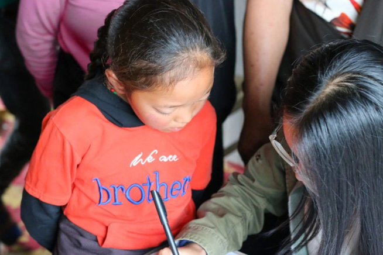

Basic Infomation
I’m now a graduate student majored in computer science in Zhejiang University. It’s lucky for me to reach here, and I’m grateful to those who have helped me. I’m trying to make my years of learning more meaningful to the everyone or someone, as a return to the kindness of those person and the world.
Education Experience
2012-2015 Leshan Experimental Middle School
I started to learn programming and algorithm. I got some awards, that make it possible for me to enter better hight school in modern city.
2015-2018 Chengdu No.7 High School
I spent some time in NOIP(National Olympiad in Informatics in Provinces) to keep my interests in computer science.
2018-2022 undergraduate student in Zhejiang University majored in computer science
During that time I was involved in Qiushi Honor’s Program of Chu Kochen Honors College, advised by Prof. Yueming Wang and Prof. Yingcai Wu. I explored my interests in a wide range of area including BCI(brain computer interface) and VA(visualization analysis), and finally chose to dig deeper in CG.
I also do well in course learning and I’m ranked 4th in my major. Besides, I spent a lot of time in doing volunteer work. In my second year in university, I joined volunteer teaching group for China’s west poor county(where I’m from). After that, I worked as tour guide at Liangzhu Museum for a long time. I also do short-term volunteer jobs, and I’m honored to be named as “the public welfare star” of this year. Only 3-5 students in the whole school got this honor.

2022-now graduate student in Zhejiang University majored in computer science
I’m now working at computer graphics, to be more specific, at differentiable acquisition, advised by Prof. Hongzhi Wu, State Key Lab of CAD&CG.
Research Experience
XBMI summer school 2020.1 - 2020.9
LeNet5 without package. more information
Fin Tech summer school 2020.9
7 reproducing tasks with a exploratory task. more information
Research on Long-term Adaptive Neural Decoding 2020.5-2021.5
Tac-Anticipator: Visual Analytics of Anticipation Behaviors in Table Tennis Matches 2020.12-2021.3
in the cast
second author
AWARDS
| Year | Prize | Notes |
|---|---|---|
| 2018-2022 | Zhejiang University Scholarship | First Prize*1, Third Prize*2 |
| 2018-2022 | Zhejiang University Excellent Student | 2 times |
| 2019 | Yongping Scholarship for Student | select two students each year |
Other Bolgs
2015-2017 SinaBlogs
2017-2021 CNblogs
painting(tablet painting and watercolor) LOFTER